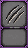
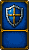
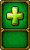
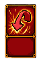
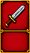

敵が「攻撃するだけ」から卒業して、カウンター・防御・回復を使ってくるステージの設計案。
フローチャートは実アプリのノード CSS（SlotNode / ConditionNode /
ForNode / Card など）をそのまま写して描画している。
※ 数値（HP・power・周回数）はすべて目安。実装時にプレイテストで調整する前提。
※ 新カード 3 種の絵柄は未制作のため、既存カードに紫の「てき」バッジを重ねた仮表示。
敵の行動は今まで通り lockedCard としてフローチャートに埋め込む。
つまり「敵の AI」を別に作るのではなく、敵の作戦もフローチャートの一部としてプレイヤーに見せる。
プレイヤーは敵の作戦を読んで、空きマスに自分のカードをはめて対抗する——という現在の設計思想をそのまま拡張する。

10monster。数字のぶんだけダメージを受ける。
20てきmonster_guard。敵にシールド。次の 1 マスだけ、こちらの攻撃を数字のぶん吸収する。
15てきmonster_heal。敵の HP が数字のぶん回復する（maxEnemyHp 上限）。
てきmonster_reflect。次の 1 マスだけ、こちらの攻撃をはねかえす。ダメージはそのまま自分に返ってくる。プレイヤー側の guardShield / reflectActive と完全に対称な敵側変数を追加する。
| 変数 | 意味 | 条件ノードでの参照例 |
|---|---|---|
enemyGuardShield | 敵のシールド残量 | enemyGuardShield > 0 |
enemyReflectActive | 敵がカウンターの構え中か | enemyReflectActive === true |
バフの寿命ルールもプレイヤー側と同じ「直後の 1 マスだけ有効」
（clearTransientBuffs の対称拡張）。ルールが対称だから、プレイヤーは自分のカードで学んだ知識を
そのまま敵の行動の読みに使える。
プレイヤーの攻撃（attack / finisher）が敵に届くまでの判定順。monster がプレイヤーのシールド／カウンターで処理される流れの鏡写し。
finisher（ひっさつカード）だけは「全部の力がつまった特別なカード」なので、
シールド・カウンターを貫通させる案もある（最終ボス演出と相性が良い）。
学ばせたい概念が 1 ステージ 1 つになるよう、易 → 難の順に並べる。
敵防御 20 の直後のマス 2 に攻撃を置くと丸ごと吸収されて 0 ダメージ。 攻撃 2 枚の合計がちょうど 40 なので、1 枚でも無駄にすると倒せない。

20マス 2 の回復は「シールドに攻撃を吸わせない」置き場しのぎと、「直後の敵攻撃 15 に備える」の一石二鳥。
カウンター直後のマス 2・マス 4 に攻撃を置くと、自分のダメージがそのまま自分に返ってくる（攻撃 20 → 自分が 20 くらう）。
マス 2 の防御が「カウンターに攻撃を出さない」と「直後の敵攻撃 10 をシールドで防ぐ」を兼ねる気持ちよさが肝。
毎周、敵は 15 回復する。攻撃 5 をカウンター倍率マス（マス 1）に置くと、ダメージが 5 → 10 → 15 → 20… と周回ごとに育つ。最初の 2 周は敵の HP がむしろ増えるが、 3 周目で拮抗し、4 周目から逆転する。
| 周 | 1 | 2 | 3 | 4 | 5 | 6 | 7 | 8 |
|---|---|---|---|---|---|---|---|---|
| 攻撃 | −5 | −10 | −15 | −20 | −25 | −30 | −35 | −40 |
| 周終了時の敵HP | 50 | 55 | 55 | 50 | 40 | 25 | 5 | 0 勝利 |
想定解はこれだけ。面白さは「一見負けているグラフが必ず勝ちに収束する」ことを見抜けるかにある。
runaway（無限ループ）で即敗北。既存の無限ループ教材（周回上限）と地続きで「終了条件を自分で作る」を教える。
ウルフは奇数周＝カウンターの構え、偶数周＝攻撃を繰り返す
（既存の forCounter 条件をそのまま使う。4-4 の「のこり2回？」の応用）。
置けるマスは 2 つだけだが、くりかえし 4 回の中でマス 1 は 1・3 周目に、マス 2 は 2・4 周目に 2 回ずつ実行される。
敵 HP のしきい値で作戦が切り替わる。ループの先頭に条件を並べるだけで「フェーズ制ボス」がフローチャートとして表現できる。
| フェーズ | 敵の作戦 | 正解の考え方 |
|---|---|---|
| 盾（HP > 60） | 防御 30 で攻撃を受け止めてから反撃 | シールドを貫通できる大ダメージが要る → マス 1 に攻撃 15（×3 = 45、シールド 30 を抜いて毎周 15 通る） |
| 癒（60 ≧ HP > 30） | 毎周 5 回復して粘る | 回復量を上回る攻撃でじわじわ削る → マス 2 に攻撃 10（毎周 −5 ずつ前進）、マス 3 に回復 20 で長期戦に耐える |
| 牙（HP ≦ 30） | カウンターの構え + 大技 40 | マス 4 は攻撃厳禁 → 防御 40 を置けば「カウンター回避」と「大技 40 の完封」の一石二鳥。とどめはマス 5 の攻撃 10 |
3 つのフェーズで 3 つのステージ（案 1〜3）の教訓をすべて回収する集大成。 1 枚のカードの置き場所がフェーズをまたいで何度も実行されるので、「この 5 枚をどこに置くか」だけで戦略パズルとして成立する。
acceptOnly: "attack"（攻撃しか置けないマス）を敵カウンターの直後に置き、そばに倍率 ×0 マスを用意する。攻撃 × 0 = 0 ダメージ → はねかえりも 0。「わざと空振りしてカウンターをやり過ごす」というひねった解法が作れる。slot('slot-1') === 'attack' の発展。「目印マスに攻撃を置いたら敵はカウンター側の道を通る」——配置そのものが敵の行動を変える、読み合いのメタステージ。enemyReflectActive === true や enemyGuardShield > 0 を直接参照させる上級ステージ。「状態変数を読む」プログラミングそのものを敵の見切りとして教えられる。対称設計なので、既存のプレイヤー側ロジックの鏡写しで済む。
| 触る場所 | 内容 |
|---|---|
engine/simulateBattle.js |
applyNodeEffect に monster_guard / monster_heal / monster_reflect の分岐を追加。attack / finisher の分岐で enemyReflectActive → はねかえし、enemyGuardShield → 吸収の判定を挟む。clearTransientBuffs を敵バフにも対称拡張。initialState に enemyGuardShield: 0 / enemyReflectActive: false |
engine/evaluateCondition.js |
変更不要（変数はコンテキスト経由）。buildEvalContext 側に enemyGuardShield / enemyReflectActive を追加 |
stores/battleStore.js |
live 実行（scheduleNodePhase ほか）に同じ効果分岐と演出（敵側シールド・カウンター構えの表示、ReflectDamageFloater の敵→自分向き版）を追加。sim/live の整合チェックは既存の仕組みに乗る |
data/card_help.json |
新カード 3 種の説明を追加（ふりがな付き。§1 の名称案を使用） |
data/stages.json |
lockedCard に新 id を書くだけ。flow DSL の構文変更は不要 |
| カード画像 | monster_guard.png / monster_heal.png / monster_reflect.png（命名規則どおり効果 id と一致させる。追加時は pngquant で最適化） |